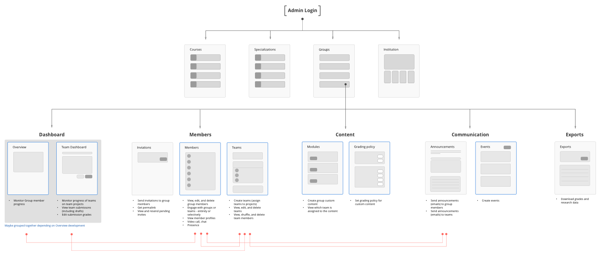

Team Assignment
Online degree is one of Coursera's biggest new initiatives in 2006. Team assignment is the essential requirement to provide high engagment learning and teaching experience for Groups (cohorts) thus adding values to online dgree programmes.
Understanding Users' Mental Model
Team assignment introduced several major new features to Groups UI, including custom content authoring, team management, engaging with learners, and monitoring progress on dashboard. The first step of the project was to design the IA in order to make task-completion effortless, and wayfinding natural. The decisions were made based on task breakdown, card sorting exercise, user research, and several feedback sessions, designed to understand the user mental model. design the systematic and functional foundation for product interactions.
-

-

-
Concept to product
Once the user flow was understood, the next step was putting it into sketches and lo-fid wireframes. To make the intertwined flow understood, I formed a POV around the thing
To maximize the interaction rate, We tested eight buckets with various combination of icons, interaction, and text link. Among the winning group with thumbs up, down, and flag icon, input with no additional input box had 34% higer reinteraction rate, thus making it our UI of choice. Once the direction is decided, we implemented on mobile as well
The Result
Team assignment is planned to be launched in March to pilot the high engagement course as the key part of the online iMBA degree that Coursera offers in partnership with University of Illinois.